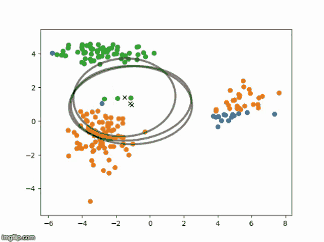

高斯混合模型和EM算法
Tabular Playground Series - Jul 2022是一场无监督聚类，第一名采用了不到一百行代码，主要核心内容是使用GMM和EM。
1. 模型定义
假设观测数据集为 ({x_1, x_2, \dots, x_N})，每个 (x_i\in\mathbb{R}^D)。GMM 假设数据的生成过程为：
- 从 (K) 个高斯分布中，以概率 (\pi_k) 选取第 (k) 个分量，其中
[
\sum_{k=1}^K \pi_k = 1,\quad \pi_k\ge0.
] - 给定选中的组件 (k)，从第 (k) 个高斯分布中采样：
[
x_i \sim \mathcal{N}(x\mid\mu_k,\Sigma_k).
]
因此，对任意一个观测 (x) 的似然为：
[
p(x\mid {\pi_k,\mu_k,\Sigma_k}{k=1}^K)
= \sum{k=1}^K \pi_k,\mathcal{N}(x\mid\mu_k,\Sigma_k).
]
2. 目标：最大化对数似然
我们希望找到参数集合 (\Theta={\pi_k,\mu_k,\Sigma_k}{k=1}^K)，使得观测数据的对数似然最大：
[
\mathcal{L}(\Theta)
= \ln
\prod{i=1}^N
\sum_{k=1}^K \pi_k,\mathcal{N}(x_i\mid\mu_k,\Sigma_k)
= \sum_{i=1}^N \ln\Bigl(\sum_{k=1}^K \pi_k,\mathcal{N}(x_i\mid\mu_k,\Sigma_k)\Bigr).
]
直接对上式求导并解出闭式解困难，因此引入 EM 算法来迭代优化。
3. EM 算法概览
EM 算法将“数据点属于哪个组件”视作隐变量 (z_i)，其中 (z_i=k) 表示第 (i) 个点来自第 (k) 个高斯分量。算法在每次迭代中分两步：
-
E 步（Expectation）
计算当前参数下，各数据点属于各分量的“后验概率”——责任度（responsibility）
[
\gamma_{ik}
= p(z_i = k \mid x_i,,\Theta^{\text{old}})
= \frac{\pi_k^{\text{old}};\mathcal{N}(x_i\mid\mu_k^{\text{old}},\Sigma_k^{\text{old}})}
{\sum_{j=1}^K \pi_j^{\text{old}};\mathcal{N}(x_i\mid\mu_j^{\text{old}},\Sigma_j^{\text{old}})}.
] -
M 步（Maximization）
利用上面算得的 (\gamma_{ik}) 来更新参数，使得期望完全数据对数似然最大：- 有效样本数：
[
N_k = \sum_{i=1}^N \gamma_{ik}.
] - 更新混合权重：
[
\pi_k^{\text{new}} = \frac{N_k}{N}.
] - 更新均值：
[
\mu_k^{\text{new}}
= \frac{1}{N_k} \sum_{i=1}^N \gamma_{ik},x_i.
] - 更新协方差：
[
\Sigma_k^{\text{new}}
= \frac{1}{N_k} \sum_{i=1}^N \gamma_{ik},(x_i - \mu_k^{\text{new}})(x_i - \mu_k^{\text{new}})^\top.
]
- 有效样本数：
不断迭代 E 步和 M 步，直到参数收敛（对数似然增益低于阈值或达到最大迭代次数）。

4. EM 算法伪代码
1 | |
参考资料
https://www.kaggle.com/competitions/tabular-playground-series-jul-2022/discussion/334887